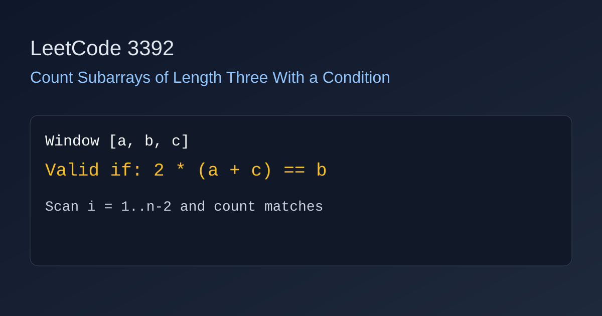

LeetCode 3392: Count Subarrays of Length Three With a Condition (Array / Simulation)
LeetCode 3392ArraySimulationSource: https://leetcode.com/problems/count-subarrays-of-length-three-with-a-condition/

English
Check every window [a,b,c] of length 3. The condition is a + c == b / 2, which is equivalent to 2 * (a + c) == b and avoids floating-point issues. Count how many windows satisfy it.
class Solution { public int countSubarrays(int[] nums) { int ans = 0; for (int i = 1; i + 1 < nums.length; i++) if (2 * (nums[i - 1] + nums[i + 1]) == nums[i]) ans++; return ans; } }func countSubarrays(nums []int) int { ans := 0; for i := 1; i+1 < len(nums); i++ { if 2*(nums[i-1]+nums[i+1]) == nums[i] { ans++ } }; return ans }class Solution { public: int countSubarrays(vector<int>& nums) { int ans = 0; for (int i = 1; i + 1 < (int)nums.size(); ++i) if (2 * (nums[i - 1] + nums[i + 1]) == nums[i]) ++ans; return ans; } };class Solution:
def countSubarrays(self, nums: list[int]) -> int:
ans = 0
for i in range(1, len(nums) - 1):
if 2 * (nums[i - 1] + nums[i + 1]) == nums[i]:
ans += 1
return ansvar countSubarrays = function(nums) { let ans = 0; for (let i = 1; i + 1 < nums.length; i++) if (2 * (nums[i - 1] + nums[i + 1]) === nums[i]) ans++; return ans; };中文
遍历所有长度为 3 的子数组 [a,b,c]。题目条件是 a + c == b / 2，可改写为 2 * (a + c) == b，这样全程用整数判断更稳定。满足条件就计数加一。
class Solution { public int countSubarrays(int[] nums) { int count = 0; for (int i = 1; i + 1 < nums.length; i++) { if (2 * (nums[i - 1] + nums[i + 1]) == nums[i]) count++; } return count; } }func countSubarrays(nums []int) int { count := 0; for i := 1; i+1 < len(nums); i++ { if 2*(nums[i-1]+nums[i+1]) == nums[i] { count++ } }; return count }class Solution { public: int countSubarrays(vector<int>& nums) { int count = 0; for (int i = 1; i + 1 < (int)nums.size(); ++i) { if (2 * (nums[i - 1] + nums[i + 1]) == nums[i]) ++count; } return count; } };class Solution:
def countSubarrays(self, nums: list[int]) -> int:
count = 0
for i in range(1, len(nums) - 1):
if 2 * (nums[i - 1] + nums[i + 1]) == nums[i]:
count += 1
return countvar countSubarrays = function(nums) { let count = 0; for (let i = 1; i + 1 < nums.length; i++) { if (2 * (nums[i - 1] + nums[i + 1]) === nums[i]) count++; } return count; };
Comments